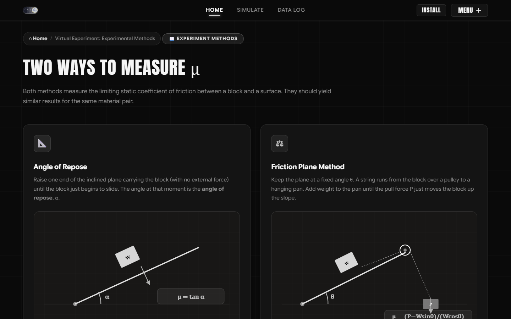
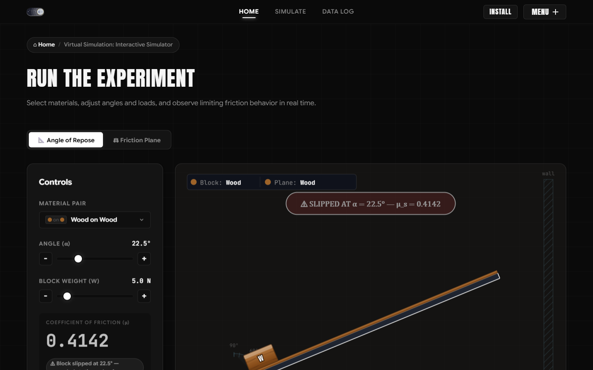
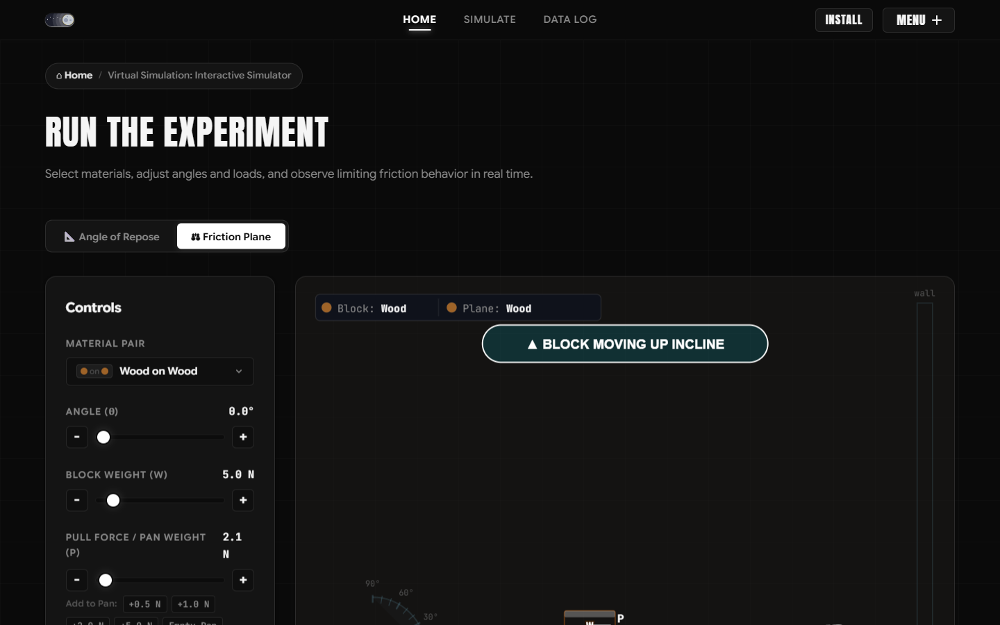
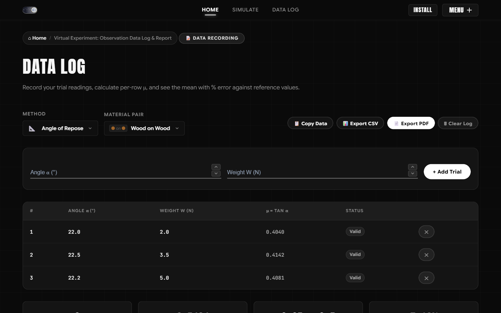
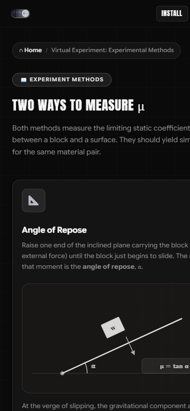
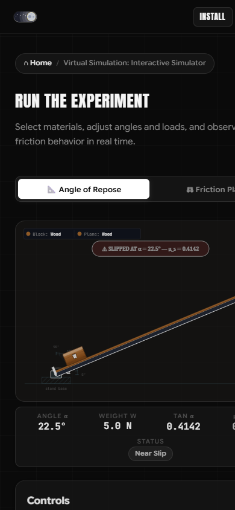
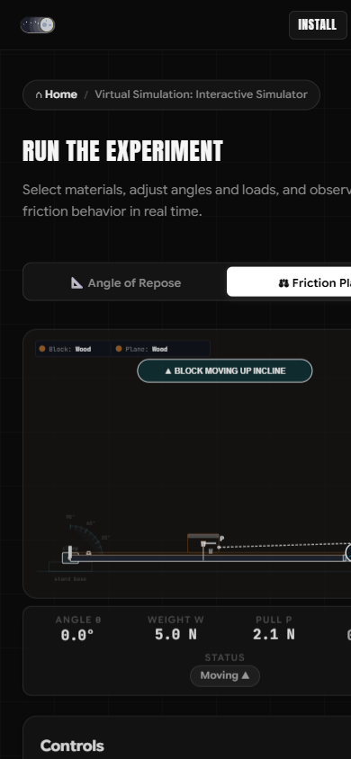
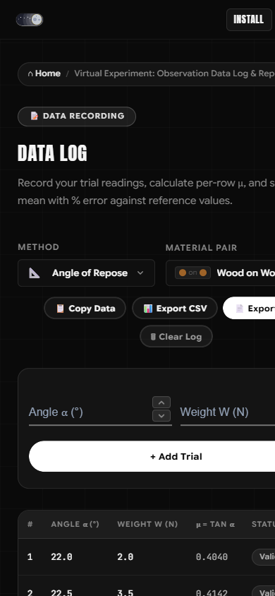

Determination of
Coefficient of
Friction
Every time you walk without slipping, hold a glass without it sliding from your fingers, or a car grips the road on a sharp turn — friction is the invisible force making it all possible.
But what exactly is friction? How do we measure it? And why does a block stay still on a tilted surface — until suddenly, it doesn't?
What is the Coefficient of Friction?
The coefficient of friction (μ) is a dimensionless number that quantifies the resistance between two surfaces in contact. It tells you how "grippy" a surface pair is — a higher μ means more resistance to sliding. Steel on steel might be around 0.6, while lubricated surfaces can drop to 0.1. This single number governs whether a block stays put on a slope or starts to slide.
Why Does This Matter in Engineering?
Engineers rely on friction coefficients to design braking systems, conveyor belts, machine bearings, and structural joints. Underestimate friction — parts seize and overheat. Overestimate it — objects slide when they shouldn't. Measuring μ accurately is a foundational skill in applied mechanics, and this experiment teaches you exactly how to do it.
There are two classical ways to determine the static coefficient of friction in a lab. Both measure the exact moment a block overcomes static friction — but they approach the problem from completely different angles.
Angle of Repose Method
Geometry-BasedHow Does It Work?
Place a block on a flat inclined plane. Slowly tilt the plane upward. As the angle increases, gravity's pull along the slope grows — but friction holds the block in place. At a critical angle called the angle of repose (α), the block is at the verge of sliding. At this exact moment, the forces are perfectly balanced.
What's the Formula?
At the tipping point, the component of gravity along the slope equals the maximum static friction force. This gives us a beautifully simple result:
No force meters, no pulleys — just measure the angle. The tangent of that angle is your coefficient of friction. Geometry alone reveals the physics.
Friction Plane Method
Force-BasedHow Does It Work?
Set the inclined plane to a fixed angle θ. A string runs from the block, over a pulley at the top of the plane, to a hanging pan. Add slotted weights to the pan one by one. The pull force (P) gradually increases until it's just enough to overcome friction and slide the block upward. That threshold force — the exact moment of impending motion — is what you measure.
What's the Formula?
At the verge of motion, the pull force must overcome both the gravitational component along the slope and friction. Balancing all forces along the inclined surface gives us:
Here, P is the pull force from the hanging weights, W is the block's weight, and θ is the plane's angle. By measuring these three values, you compute the exact coefficient of friction.
Real-World Material Behaviour
Experiment with 9 different material pairs — from Wood on Wood to Rubber on Concrete — and observe how surface texture, composition, and lubrication dramatically change the coefficient of friction. Same experiment, wildly different results.
Scientific Data Recording
Log trial observations, compute mean values, compare your experimental results against standard reference data, and export professional lab reports — building essential engineering documentation skills along the way.
Physics-Accurate Virtual Simulation
Every aspect of this simulator is built on rigorous mechanics — force decomposition along inclined planes, static equilibrium conditions, real-time vector resolution, and validated material friction coefficients sourced from standard engineering references. The result is a virtual experiment that mirrors the behaviour of a physical apparatus with scientific fidelity.
Two Ways to Measure μ
Both methods measure the limiting static coefficient of friction between a block and a surface. They should yield similar results for the same material pair.
Angle of Repose
Raise one end of the inclined plane carrying the block (with no external force) until the block just begins to slide. The angle at that moment is the angle of repose, α.
At the verge of slipping, the gravitational component along the slope exactly equals the maximum static friction force.
Friction Plane Method
Keep the plane at a fixed angle θ. A string runs from the block over a pulley to a hanging pan. Add weight to the pan until the pull force P just moves the block up the slope.
At the verge of motion up the slope, the pull force balances gravity's component down the slope plus friction resisting the impending motion.
Run the Experiment
Select materials, adjust angles and loads, and observe limiting friction behavior in real time.
Controls
Controls
Typical Static Friction Coefficients
Standard engineering reference values for common material pairs. Used as a sanity check and basis for % error calculation — not absolute targets.
| Material Pair | μ (Low) | μ (High) | Midpoint |
|---|---|---|---|
| Wood on Wood | 0.25 | 0.50 | 0.375 |
| Wood on Steel | 0.20 | 0.60 | 0.400 |
| Wood on Glass | 0.20 | 0.50 | 0.350 |
| Glass on Glass | 0.90 | 1.00 | 0.950 |
| Steel on Steel (dry) | 0.50 | 0.80 | 0.650 |
| Steel on Steel (lubricated) | 0.05 | 0.20 | 0.125 |
| Aluminum on Aluminum | 1.05 | 1.35 | 1.200 |
| Rubber on Concrete | 0.60 | 0.85 | 0.725 |
| Brass on Steel | 0.35 | 0.50 | 0.425 |
⚠ Note: These are typical static-friction ranges from standard engineering references, not certified values for any specific sample. They're used as a sanity check / basis for % error, not as an absolute target. Aluminum-on-aluminum's unusually high 1.05–1.35 range is a real, commonly cited figure.
Data Log
Record your trial readings, calculate per-row μ, and see the mean with % error against reference values.
Understanding Friction
The physics behind the experiment — key laws, definitions, and clarifications.
Method Comparison
Compare mean μ from both methods for the same material pair. Both should yield similar values — μ is a property of the surface pair, not the method.
Angle of Repose
μ = tan α
Friction Plane
μ = (P − W sin θ) / (W cos θ)
HOW TO USE THE SIMULATION
Comprehensive step-by-step guidance for operating the apparatus, logging observations, and evaluating friction physics
Navigating the Simulation Modules
Accessing the interactive apparatus, experimental theory, and observation data log
The virtual simulation is structured into modular sections designed to replicate a complete physical engineering mechanics laboratory session:
- Top Navigation Ribbon: Quick access to Home (interactive overview & physics showcase), Simulate (real-time virtual apparatus), and Data Log (measurement table & report generator).
- Staggered Menu (Right Icon): Click the hamburger toggle at the top right to access all sections: How to Use, Methods, Reference Data, Theory, Method Comparison, and Contributors.
- Dark & Light Theme: Toggle between the sleek obsidian dark workspace and high-contrast light mode using the theme switch on the left of the navigation bar.
#simulate, #log, or #how-to-use.

Operating Method A: Angle of Repose
Measuring limiting static friction by gradually tilting the plane until sliding begins
In this method, the limiting angle $\theta_s$ is determined where gravity overcomes limiting static friction without any external pull cord:
- Select Material Pair: Choose from standard engineering pairs (e.g. Wood on Wood, Wood on Steel, Glass on Glass, Rubber on Concrete) using the dropdown.
- Adjust Block Weight ($W$): Set the normal load from 1.0 N to 10.0 N. Observe that while normal force $N = W \cos\theta$ increases with weight, the critical slip angle remains invariant.
- Tilt the Incline Plane ($\theta$): Drag the angle slider or click the precision
+/-stepper buttons (0.5° increments) to tilt the plane. - Analyze Force Vectors: Observe the dynamic free-body diagram: normal force $N$ (perpendicular to plane), parallel weight component $W \sin\theta$ (driving force), and friction vector $f$ (resisting motion).
- Detect Impending Motion: Once $\theta$ reaches the repose angle ($\tan\theta = \mu_s$), the block breaks equilibrium and accelerates down. The digital readout displays the exact measured coefficient $\mu = \tan\theta$.
- Record Trial: Click to log the reading into your trial table.

Operating Method B: Friction Plane with Pulley & Pan
Measuring friction by applying a horizontal or inclined pulling effort via cord and hanging pan
Switch to the Friction Plane tab to operate the classical belt/pulley mechanical bench apparatus:
- Set Incline Angle ($\theta$): Set to 0° for a standard horizontal bench, or incline the bed to any angle up to 60°.
- Set Block Weight ($W$): Choose the test mass resting on the bench.
- Add Pan Effort ($P$): Gradually load weight into the hanging pan attached to the block through the frictionless pulley.
- Use Quick-Add Weights: Click the
+5g,+10g,+20g, or+50gbuttons to rapidly load standard lab slotted weights into the pan. - Slip Condition & Calculation: When $P \ge W \sin\theta + \mu_s W \cos\theta$, limiting equilibrium is reached. The formula chip evaluates:
$\mu = \frac{P - W \sin\theta}{W \cos\theta}$ (or $\mu = \frac{P}{W}$ when $\theta = 0^\circ$)
- Log Reading: Click Record Observation to send the trial parameters into the Data Log.

Observation Data Log, Verification & PDF Report
Analyzing statistical deviation, comparing with standard handbook values, and generating lab reports
Navigate to the Data Log tab to review recorded trials and conduct rigorous scientific validation:
- Interactive Trial Table: Displays each recorded observation with Trial #, Method, Material Pair, Angle ($\theta$), Weight ($W$), Effort ($P$), and Calculated $\mu$.
- Filter by Method or Surface: Use the dropdowns at the top of the Data Log to isolate specific trials.
- Statistical Evaluation:
- Mean $\mu$: Computes the arithmetic average of logged trials.
- Reference Range: Displays validated handbook values from engineering literature.
- Percentage Error: Automatically calculates $\% \text{Error} = \frac{|\mu_{\text{mean}} - \mu_{\text{ref}}|}{\mu_{\text{ref}}} \times 100\%$.
- Range Check Badge: Confirms whether results fall within standard physical tolerance.
- Export Formal PDF Report: Click Export PDF to generate a complete, formatted engineering lab report with student metadata, formulas, observations, and statistics.
- Export CSV: Download comma-separated data for spreadsheet plotting in Excel, MATLAB, or Python.

Mobile Touch Navigation & Drawer Menu
Accessing all modules smoothly on smartphones and tablet touchscreens
The mobile experience is specially optimized for one-thumb operation:
- Staggered Drawer Menu: Tap the menu button at top right to slide open the full navigation drawer.
- Sticky Navigation Header: Quick navigation tabs remain accessible without taking away simulation canvas space.
- Light & Dark Theme: Tap the theme toggle on the navigation bar for high sunlight visibility or battery-saving dark mode.

Operating Angle of Repose on Mobile
Touch-optimized angle tilting, responsive apparatus view, and one-tap logging
On phone screens, controls and apparatus are arranged in a natural vertical scroll layout:
- Apparatus Canvas: Scaled automatically to phone viewports with crisp SVG vector rendering.
- Touch Sliders & Steppers: Drag the oversized slider thumbs or tap the large
+/-stepper buttons for precise 0.5° increments without finger slips. - Compact Digital Readout: Shows Angle $\theta$, Weight $W$, and calculated $\mu = \tan\theta$ with high-contrast text.
- One-Tap Log: Tap Record Observation to immediately save readings into your trial log.

Operating Friction Plane on Mobile
Thumb-friendly quick-weight addition and hanging pan simulation
Designed for fast experimentation without typing:
- Quick Weight Buttons: Tap
+5g,+10g,+20g, or+50gchips to instantly load mass into the hanging pan. - Cord & Pulley Visuals: Real-time animation shows the cord tautening and the block overcoming limiting static friction.
- Real-Time Formula: Evaluates $\mu = \frac{P - W \sin\theta}{W \cos\theta}$ in real time as weights change.

Mobile Data Log & Instant Report Generation
Viewing trial records on phone screens and exporting PDF reports
Conduct full lab data recording and reporting directly from your mobile device:
- Card & Scrollable Table View: Easily swipe horizontally across table columns to view all trial values.
- Instant Statistics: View Mean $\mu$, Reference Value, and % Error on mobile summary cards.
- Mobile PDF Download: Tap Export PDF to generate and download the laboratory report directly to your device storage (Files app or Downloads).

PROJECT CONTRIBUTORS & MENTORSHIP
Engineering Mechanics Virtual Simulation • Academic Year 2026–27